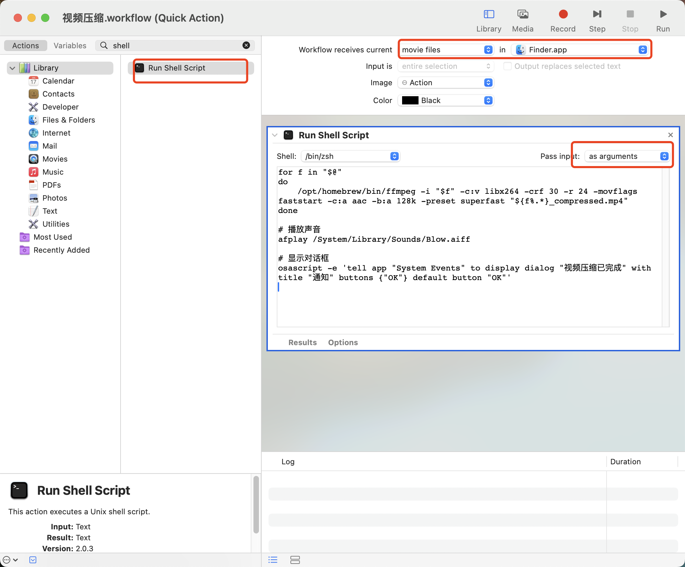

macOS 下使用 automator 给视频文件添加快捷压缩动作
最近学习到了一条可以大幅度压缩视频体积且观感上视频质量没有很大损失的 ffmpeg 命令：
ffmpeg -i input.mov -c:v libx264 -crf 30 -r 24 -movflags faststart -c:a aac -b:a 128k -preset superfast out.mp4
但是每次在命令行执行这么复杂的命令还是很不方便的，可以使用 macOS 自带的 automator 自动化工具制作一个简单的右键菜单动作，方便的对视频文件快速压缩。
打开 automator 新建一个 quick action，添加一个 run sheel script:

脚本内容如下：
for f in "$@"
do
/opt/homebrew/bin/ffmpeg -i "$f" -c:v libx264 -crf 30 -r 24 -movflags faststart -c:a aac -b:a 128k -preset superfast "${f%.*}_compressed.mp4"
done
# 播放声音
afplay /System/Library/Sounds/Blow.aiff
# 显示对话框
osascript -e 'tell app "System Events" to display dialog "视频压缩已完成" with title "通知" buttons {"OK"} default button "OK"'保存后，在视频文件右键菜单的 action 栏就可以看到我们添加的动作了：
点击执行动作，完成后会有提示信息。
标签：无